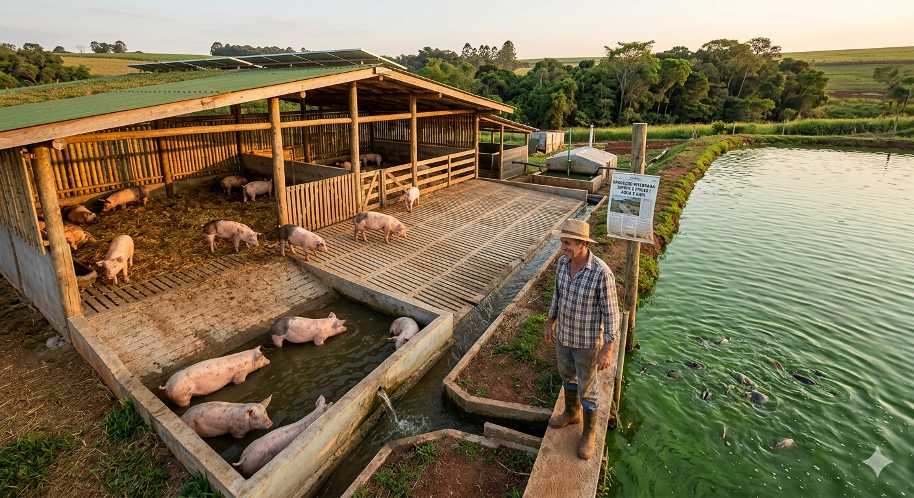
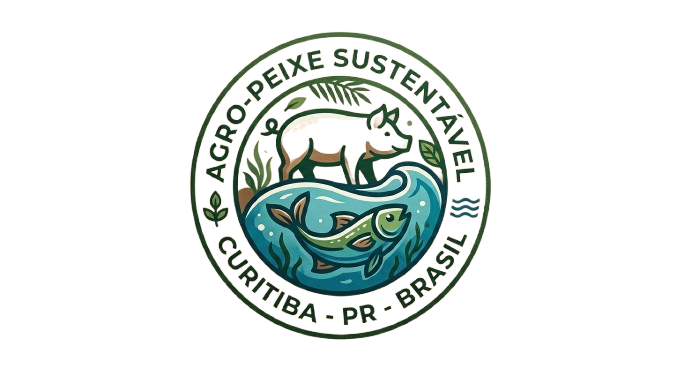

- Criação de alimentos de forma sustentavel
- Unificação da criação de peixes e porcos
A engenharia da nossa granja foi projetada para alinhar alta produtividade ao menor impacto ambiental possível. A estrutura principal é construída utilizando materiais sustentáveis, como madeira de reflorestamento tratado e coberturas que priorizam o isolamento térmico passivo, reduzindo a necessidade de ventilação artificial constante.
Para garantir a nossa autossuficiência, o telhado conta com um sistema de painéis solares fotovoltaicos, responsáveis por gerar toda a energia limpa necessária para o funcionamento das bombas de água, iluminação e automação do trato. O grande diferencial do manejo interno é o uso do piso ripado (vazado). Essa tecnologia traz três grandes benefícios práticos:
Higiene e Bem-estar: Os porcos não ficam em contato direto com a sujeira, o que reduz drasticamente a proliferação de doenças e o estresse animal.
Economia Hídrica: A limpeza se torna muito mais rápida e exige uma quantidade significativamente menor de água em comparação às baias de piso comum.
Coleta Eficiente: Os dejetos passam pelas frestas e são direcionados imediatamente para as canaletas subterrâneas, evitando o acúmulo de gases nocivos (como a amônia) dentro do galpão e garantindo o fluxo contínuo de nutrientes para a etapa seguinte do projeto.

1. A Estrutura do Chiqueiro O chiqueiro é construído de forma suspensa ou bem na margem do tanque (açude). O piso tem uma inclinação ou frestas estratégicas para que a limpeza e os dejetos sejam direcionados direto para a água.
2. Dejetos que Viram Alimento (De forma indireta) Existe um mito de que os peixes comem as fezes do porco diretamente. Na verdade, a mágica da biologia funciona assim: Fertilização: Os dejetos dos porcos caem na água e funcionam como um adubo orgânico rico em nutrientes (nitrogênio e fósforo). Produção de Plâncton: Esse "adubo" estimula o crescimento rápido de algas microscópicas e pequenos organismos na água (o chamado plâncton). O Banquete: Peixes filtradores e onívoros, como a tilápia e a carpa, adoram comer esse plâncton. Ou seja: o porco fertiliza a água, a água cria o plâncton, e o peixe se alimenta muito bem gastando quase nada de ração.
3. Spa e Termorregulação dos Porcos Como os porcos quase não têm glândulas sudoríparas (eles não conseguem suar para aliviar o calor), a temperatura do ambiente é um desafio. No projeto, deixamos uma rampa de acesso a uma parte da água. Os porcos entram, se molham para baixar a temperatura corporal (regulação térmica) e voltam para a área seca quando querem. Isso diminui o estresse do animal e melhora o bem-estar dele.
Nota do Produtor: Esse sistema exige um controle rígido de manejo. Se houver porcos demais para o tamanho do tanque, a água fica sobrecarregada, falta oxigênio e os peixes podem morrer. O segredo aqui é o equilíbrio perfeito da quantidade de animais!

Conversa com o Gemini ola, gemini oi gemini, voce é um produtor rural no qual voce esta fazendo um chiqueiro sustentavel sobre agua para que as fezes dos porcos alimentem os peixes e uma parte do chiqueiro com acesso a agua para a regulaçao termica dos porcos explique como o sistem funciona de forma resumida Opa, tudo certo por aí? Olha, esse sistema que a gente montou aqui no sítio é o que chamamos de sistema integrado porco-peixe. É um exemplo de economia circular onde o ciclo de um bicho ajuda o do outro. Vou te explicar de forma resumida como essa engrenagem funciona: 1. A Estrutura do Chiqueiro O chiqueiro é construído de forma suspensa ou bem na margem do tanque (açude). O piso tem uma inclinação ou frestas estratégicas para que a limpeza e os dejetos sejam direcionados direto para a água. 2. Dejetos que Viram Alimento (De forma indireta) Existe um mito de que os peixes comem as fezes do porco diretamente. Na verdade, a mágica da biologia funciona assim: Fertilização: Os dejetos dos porcos caem na água e funcionam como um adubo orgânico rico em nutrientes (nitrogênio e fósforo). Produção de Plâncton: Esse "adubo" estimula o crescimento rápido de algas microscópicas e pequenos organismos na água (o chamado plâncton). O Banquete: Peixes filtradores e onívoros, como a tilápia e a carpa, adoram comer esse plâncton. Ou seja: o porco fertiliza a água, a água cria o plâncton, e o peixe se alimenta muito bem gastando quase nada de ração. 3. Spa e Termorregulação dos Porcos Como os porcos quase não têm glândulas sudoríparas (eles não conseguem suar para aliviar o calor), a temperatura do ambiente é um desafio. No projeto, deixamos uma rampa de acesso a uma parte da água. Os porcos entram, se molham para baixar a temperatura corporal (regulação térmica) e voltam para a área seca quando querem. Isso diminui o estresse do animal e melhora o bem-estar dele. Nota do Produtor: Esse sistema exige um controle rígido de manejo. Se houver porcos demais para o tamanho do tanque, a água fica sobrecarregada, falta oxigênio e os peixes podem morrer. O segredo aqui é o equilíbrio perfeito da quantidade de animais! e me explique qual a vantagem desse manejo Rapaz, as vantagens são muitas! Esse tipo de manejo é o verdadeiro "ganha-ganha" da roça, porque a gente consegue otimizar tudo. Olha só os principais pontos positivos desse sistema: 1. Economia Drástica com Ração O bolso do produtor agradece. Como os dejetos dos porcos estimulam a produção de plâncton, os peixes encontram um banquete natural na água o dia todo. Com isso, a necessidade de comprar ração comercial para os peixes cai drasticamente, reduzindo o custo de produção do tanque.
2. Duas Fontes de Renda no Mesmo Espaço Em vez de usar a terra só para o chiqueiro, o produtor passa a ter duas atividades comerciais no mesmo espaço: a carne de porco e o peixe. Isso diversifica a produção e garante que, se o preço do porco estiver baixo no mercado, o peixe ajuda a salvar o faturamento do mês.
3. Solução Ecológica para os Dejetos Quem cria porco sabe que o manejo das fezes e da urina (o esterco líquido) é um baita desafio ambiental que pode poluir o solo e os rios se feito de forma errada. Nesse sistema integrado, o que seria um poluente perigoso vira um recurso valioso para o ecossistema do tanque. É a economia circular na prática.
4. Porcos Mais Saudáveis (e que Crescem Mais) O acesso à água para regulação térmica faz milagres pelo bem-estar dos porcos. Um porco com calor fica estressado, come menos e demora mais para engordar. Com a rampinha para se refrescarem, eles ficam relaxados, se alimentam melhor e ganham peso de forma mais eficiente e saudável.
Resumo da ópera: Você gasta menos com insumos, resolve o problema do lixo ecológico, melhora a vida do animal e ainda dobra as suas chances de lucro.
